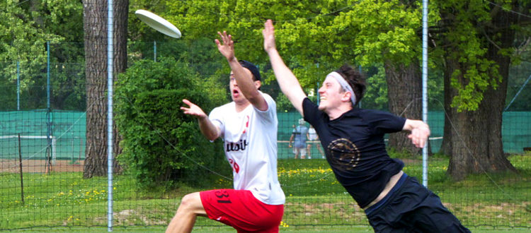

O ultimate
Ultimate sa hrajú proti sebe dva sedemčlenné tímy, ktoré sa snažia dostať prihrávkami disk do súperovej koncovej zóny. Tím, ktorému sa ň podarí nahrať a chytiť disk v súperovej zóne získava bod. Nie je to však také ľahké ako sa zdá, lebo po každom chytení disku sa hráč musí zastaviť a disk prihrať spoluhráčovi, na čo má iba 10 sekúnd. Povoleným pohybom pritom je pivotovanie, teda otáčanie sa okolo vlastnej osi s jednou nohou pevne na zemi. Ak nie je prihrávka úspešná a disk spadne na zem, je sklepnutý alebo dokonca chytený obrancom, nastáva výmena útoku a obrany a bez prerušenia hry začína útočiť opačný tím. V ultimate frisbee nie je povolený fyzický kontakt medzi hráčmi ani preťahovanie o disk.
K hre je potreba spojiť všetky tri kľúčové časti tela: ruky na presné a rýchle hody, nohy na uvolnenie sa svojmu obrancovi na ihrisku a v neposlednom rade hlavu, ktorá vyberie tú správnu z nesmierneho množstva možností kam a kedy nabehnúť, ako hodiť, kedy brániť osobne a kedy brániť priestor a podobne.
Zvláštnosťou tohto športu je, že nepotrebuje rozhodcov a riadi sa myšlienkou fair-play – v praxi to znamená, že hráči riešia prípadné porušenia pravidiel a sporné situácie sami priamo na ihrisku. V zriedkavých prípadoch, keď sa nevedia dohodnúť sa disk vráti o prihrávku naspäť a hrá sa akoby sa sporná situácia nestala. Na konci každého turnaja sa udeľuje aj cena Spirit of the Game pre tím, ktorý sa správal najférovejšie.
